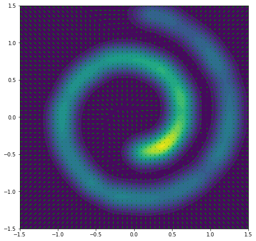
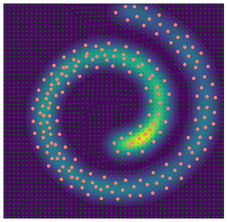

Stein Variational Gradient Descent (SVGD)
Contents
import jax
import jax.numpy as jnp
import matplotlib.pyplot as plt
from IPython.display import clear_output
%matplotlib inline
Stein Variational Gradient Descent (SVGD)¶


We implement the algorithm 1 of the paper Stein Variational Gradient Descent: A General Purpose Bayesian Inference Algorithm (Liu and Wang, 2016). Here’s the setting: Given we know the score function \(x \mapsto \nabla\log p(x)\) of some probability density \(p\), we want to generate a set of representative particles to approximate the density.
def svgd(kernel, scorefn, x_init, num_iterations,
step_size=1e-2, cb=lambda x: None, every=10):
"""Stein Variational Gradient Descent."""
@jax.jit
def step(x):
phi = lambda xi: jnp.mean(
jax.vmap(lambda xj: kernel(xi, xj)*scorefn(xj) + jax.grad(kernel)(xj, xi))(x),
axis=0
)
x = x + step_size * jax.vmap(phi)(x)
return x
x = x_init
for i in range(num_iterations):
x = step(x)
if i % every == 0:
cb(x)
return x
Example 1: Gaussian mixture¶
def RBF(lengthscale=1.0):
return lambda x1, x2: jnp.exp(-0.5*jnp.sum((x1-x2)**2) / lengthscale**2)
def KDE(kernel, x):
return lambda xi: jnp.mean(jax.vmap(kernel, (None,0))(xi, x))
def plot_contours_and_scores(p):
scorefn = jax.grad(lambda x: jnp.log(p(x)))
plt.figure(figsize=[8, 8])
x1 = jnp.linspace(-1.5, 1.5, 50)
x2 = jnp.linspace(-1.5, 1.5, 50)
x = jnp.stack(jnp.meshgrid(x1, x2), axis=-1).reshape(-1, 2)
scores = jax.vmap(scorefn)(x)
scores_norm = jnp.linalg.norm(scores, axis=-1, ord=2, keepdims=True)
scores_log1p = scores / (scores_norm + 1e-9) * jnp.log1p(scores_norm)
plt.contourf(x1, x2, jax.vmap(p)(x).reshape(50, 50), levels=20)
plt.quiver(*x.T, *scores_log1p.T, width=0.002, color='green')
def make_gaussian_mixture(lengthscale):
centers = jnp.array([[-0.75, -0.5], [0.75, 0.2]])
kde = KDE(RBF(lengthscale), centers)
scorefn = jax.grad(lambda x: jnp.log(kde(x)))
return kde, scorefn
kde_gaussians, scorefn_gaussians = make_gaussian_mixture(lengthscale=0.3)
plot_contours_and_scores(kde_gaussians)
WARNING:absl:No GPU/TPU found, falling back to CPU. (Set TF_CPP_MIN_LOG_LEVEL=0 and rerun for more info.)
def callback(x):
clear_output(True)
plot_contours_and_scores(kde_gaussians)
plt.scatter(*x.T, color="salmon")
plt.xlim(-1.5,1.5)
plt.ylim(-1.5,1.5)
plt.show()
num_particles = 100
x_init = jax.random.normal(jax.random.PRNGKey(0), (num_particles, 2)) / 2.0
x_opt = svgd(RBF(0.1), scorefn_gaussians, x_init, num_iterations=100, step_size=0.1, cb=callback)
Make a gif¶
import gif
frames = []
@gif.frame
def plot(x):
clear_output(True)
plot_contours_and_scores(kde_gaussians)
plt.scatter(*x.T, color="salmon")
plt.xlim(-1.5,1.5)
plt.ylim(-1.5,1.5)
plt.axis('off')
plt.title("SVGD")
def callback(x):
frame = plot(x)
frames.append(frame)
svgd(RBF(0.1), scorefn_gaussians, x_init, num_iterations=100, step_size=0.1, cb=callback, every=1)
gif.save(frames, 'svgd_gaussian_blobs.gif', duration=5, unit="s", between="startend")
Example 2: Swiss roll¶
from sklearn.datasets import make_swiss_roll
def sample_swiss_roll(num_samples, noise=1.0):
x, _= make_swiss_roll(num_samples, noise=noise)
x = x[:, [0, 2]] / 10.0
return jnp.array(x)
def make_swiss_score(num_samples=2500, lengthscale=0.1):
x = sample_swiss_roll(num_samples=num_samples, noise=0.5)
kde = KDE(RBF(lengthscale), x)
scorefn = jax.grad(lambda x: jnp.log(kde(x)))
return kde, scorefn
kde_swiss, scorefn_swiss = make_swiss_score()
plot_contours_and_scores(kde_swiss)

def callback(x):
clear_output(True)
plot_contours_and_scores(kde_swiss)
plt.scatter(*x.T, color="salmon")
plt.xlim(-1.5,1.5)
plt.ylim(-1.5,1.5)
plt.axis("off")
plt.show()
num_particles = 200
x_init = jax.random.uniform(jax.random.PRNGKey(0), (num_particles, 2)) * 3 - 1.5
x_opt = svgd(RBF(lengthscale=0.1), scorefn_swiss, x_init, num_iterations=100, step_size=0.1, cb=callback, every=5)

Make a gif¶
import gif
frames = []
@gif.frame
def plot(x):
clear_output(True)
plot_contours_and_scores(kde_swiss)
plt.scatter(*x.T, color="salmon")
plt.xlim(-1.5,1.5)
plt.ylim(-1.5,1.5)
plt.axis('off')
plt.title("SVGD")
def callback(x):
frame = plot(x)
frames.append(frame)
svgd(RBF(lengthscale=0.1), scorefn_swiss, x_init, num_iterations=60, step_size=5e-2, cb=callback, every=1)
gif.save(frames, 'svgd_swissroll.gif', duration=5, unit="s", between="startend")
Further Reading
Stein Variational Gradient Descent: A General Purpose Bayesian Inference Algorithm, Liu and Wang 2016 https://arxiv.org/pdf/1608.04471.pdf